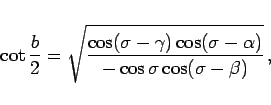

Inhalt Index DeskTop Bronstein

 Geometrie Sphärische Trigonometrie Haupteigenschaften sphärischer Dreiecke Grundformeln und Anwendungen
Geometrie Sphärische Trigonometrie Haupteigenschaften sphärischer Dreiecke Grundformeln und Anwendungen


Mit dem Halbseitensatz kann die Aufgabe, aus den drei Winkeln des sphärischen Dreiecks eine Seite oder alle drei Seiten zu berechnen, gelöst werden:
| (3.198a) |
|  | (3.198b) |
| (3.198c) |
mit
 |
(3.198d) |
Die Bezeichnungen der Größen entsprechen denen der Abbildung.

Eine andere Formulierung lautet:
| (3.199a) |
 |
(3.199b) |
| (3.199c) |
mit
 |
(3.199d) |
|
(3.199e) |
Für die Winkelsumme des sphärischen Dreiecks gilt gemäß (3.187):
| (3.200) |
so daß stets sein muß. Außerdem sind wegen der Festlegungen über EULERsche Dreiecke alle vorkommenden Wurzeln reell.